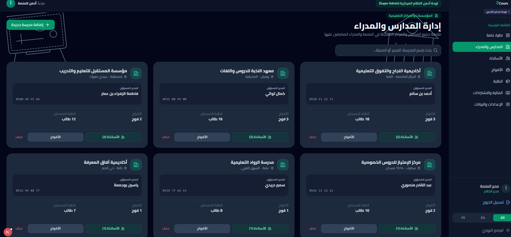

eCours
منصة سحابية مصممة لرقمنة وتحديث إدارة مراكز الدروس الخصوصية والأساتذة المستقلين، بهدف تبسيط العمليات وتسهيل المتابعة.

تحدي التصميم
غالباً ما تواجه مراكز الدروس الخصوصية والأساتذة المستقلون صعوبة في إدارة تسجيلات الطلاب، تتبع المدفوعات، وجدولة الحصص عبر الورق أو جداول الإكسل. كان التحدي هو تصميم منصة سحابية مركزية (SaaS) تعمل على تبسيط المهام الإدارية المعقدة، وتقديم تجربة مستخدم حديثة تقلل من منحنى التعلم للموظفين غير التقنيين.
من يستخدم هذه المنصة؟
تم بناء eCours لمجموعة متنوعة من المستخدمين، كل منهم بأهداف ومستويات تقنية مختلفة.
استراتيجية واجهة المستخدم والمميزات
لوحات تحكم مبنية على الأدوار
تقديم واجهات مخصصة تعرض المعلومات الأكثر صلة للمديرين والأساتذة وموظفي الاستقبال، مما يقلل من الفوضى البصرية.
جدولة موحدة
نظام تقويم متكامل يسمح بعرض الحصص وحل التعارضات وتحديث الجداول بسلاسة وسهولة.
تسجيل سريع
مسار تسجيل مبسط من 3 خطوات يمكّن موظفي الاستقبال من إضافة الطلاب للحصص ومعالجة المدفوعات في أقل من دقيقة.
تتبع مالي
وحدة شفافة ومفصلة للموارد المالية تحلل الإيرادات، وتحسب حصص الأساتذة، وتوفر وصولاً سريعاً لتواريخ الدفع.
بناء الثقة من خلال التصميم
تم تصميم الواجهة البصرية لتعكس الاحترافية، الثقة، والكفاءة المطلوبة في البرمجيات الإدارية الحديثة.
ألوان احترافية
استخدام ألوان هادئة مثل الأزرق الداكن والأسود للتأسيس، مع الأخضر كتمييز إيجابي للأفعال الرئيسية وتأكيد العمليات.
الطباعة الواضحة
دمج خطوط حديثة تدعم اللغتين معاً لضمان مقروئية عالية للبيانات المعقدة، مثل الجداول والأرقام المالية.
تخطيط البطاقات
استخدام البطاقات الظليلة لتنظيم المعلومات الثقيلة، مما يساعد المستخدمين على التركيز في عنصر واحد فقط كل مرة.
تفاعلات دقيقة
ردود فعل مرئية سريعة أثناء تفاعلات التمرير، النقر، وإرسال البيانات، لإشعار المستخدم بالتحكم الكامل وسرعة النظام.
المنصة النهائية
لوحة التحكم الرئيسية
نظرة عامة على الأداء والمؤشرات الرئيسية والإيرادات الخاصة بمركز الدروس.


الجدولة الموحدة
تقويم مركزي يوفر نظرة سريعة على جميع الحصص والمجموعات المجدولة في المركز.

إدارة الحصص والطلاب
نظام شامل لإدارة بيانات الطلاب، المدفوعات، وقوائم الحضور للمجموعات المختلفة.


تسجيل الدخول والإعدادات
واجهة دخول نظيفة بالإضافة إلى إعدادات لتخصيص القاعات والمواد وتفاصيل المركز.


النظام الذي يقف خلف الواجهات
eCours ليس نموذجاً تصميمياً، بل تطبيق Next.js 16 فعلي بـReact 19 وTypeScript وSupabase: تُصيّر مكوّنات الخادم لوحات التحكم حسب الدور، وتتولى Server Actions كل عمليات الكتابة، ويحافظ TanStack Query على تحديث القوائم بعد كل تغيير.
مخطط متعدد المستأجرين
تسع جداول مترابطة: profiles، schools، teacher_profiles، groups، students، student_groups، sessions، attendance، payments — معزولة حسب المركز والدور.
أمان على مستوى الصفوف
سياسات RLS في Postgres تفرض حدود المدير العام والمدير والأستاذ على مستوى قاعدة البيانات، لا على مستوى الواجهة فقط.
حضور عبر QR
كل حصة تصدر رمز QR، ويقرأه الأستاذ بكاميرا الجهاز لتُسجّل الحضور في Postgres لحظياً.
عربي أولاً
كل شاشة تصدر بالعربية والإنجليزية، مع تخطيط RTL وأيقونات معكوسة وتنسيق يراعي اللغة منذ المكوّن الأول.